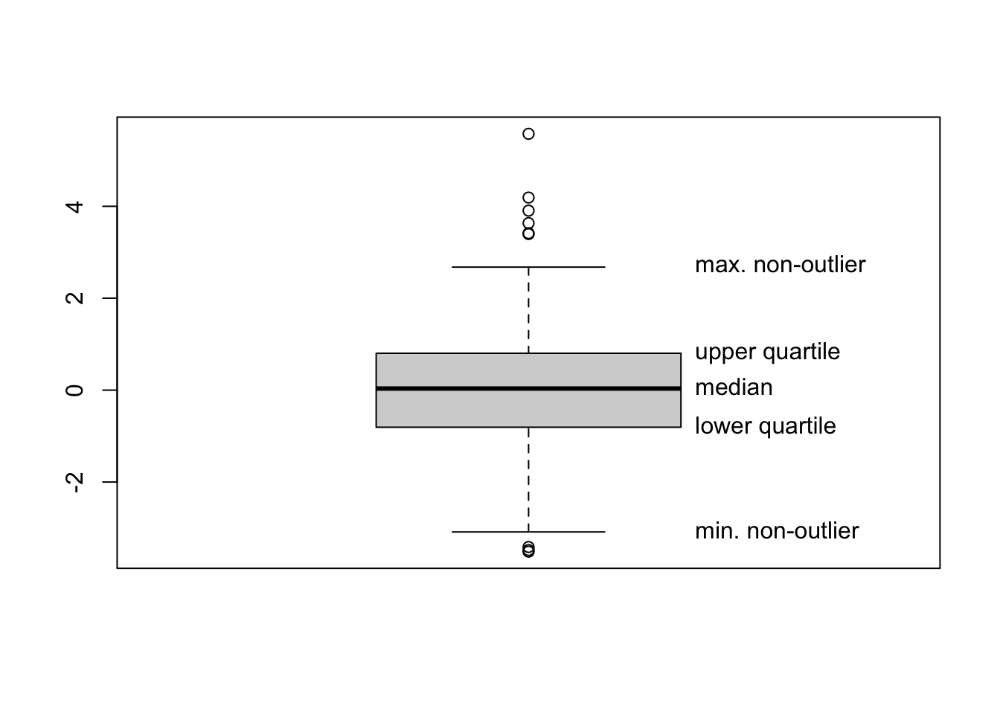
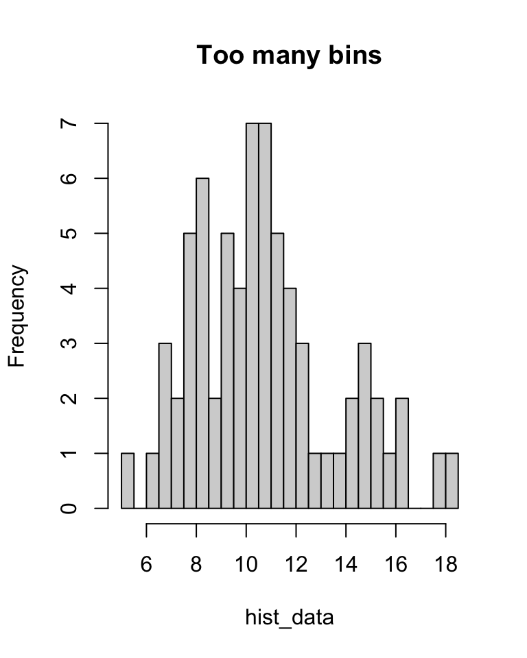
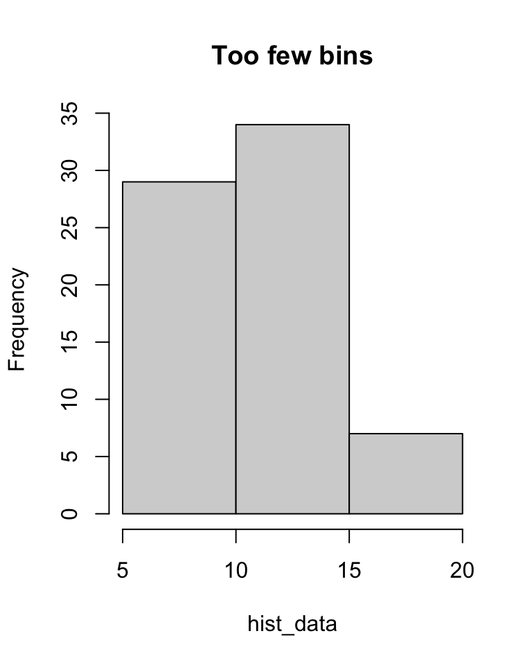
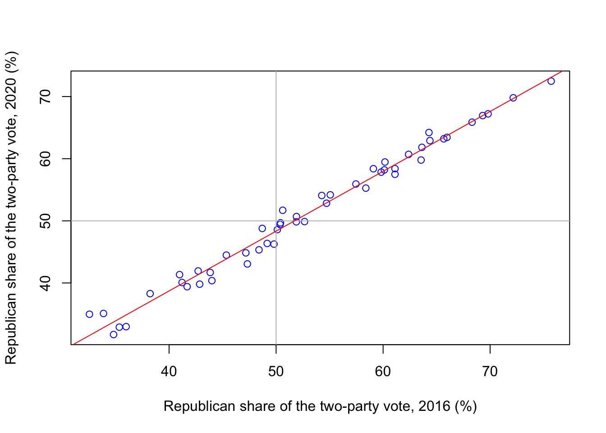

Section 1 Exploratory data analysis
1.1 What is EDA?
Statistics is the study of data. Exploratory data analysis (or EDA, for short) is the part of statistics concerned with taking a “first look” at some data. Later, toward the end of this course, we will see more detailed and complex ways of building models for data, and in MATH1712 Probability and Statistics 2 (for those who take it) you will see many other statistical techniques – in particular ways of testing formal hypotheses for data. But here we’re just interested in first impressions and brief summaries.
In this section, we will concentrate on two aspects of EDA:
- Summary statistics: That is, calculating numbers that briefly summarise the data. A summary statistic might tell us what “central” or “typical” values of the data are, how spread out the data is, or about the relationship between two different variables.
- Data visualisation: Drawing a picture based on the data is an another way to show the shape (centrality and spread) of data, or the relationship between different variables.
Even before calculating summary statistics or drawing a plot, however, there are other questions it is important to ask about the data:
- What is the data?
- How was the data collected?
- Are there any outliers? “Outliers” are datapoints that seem to be very different from the other datapoints – for example, are much larger or much smaller than the others. Each outlier should be investigated to seek the reason for them. Perhaps it is a genuine-but-unusual datapoint (which is useful for understand the extremes of the data), or perhaps there is an extraordinary explanation (maybe a measurement or recording error, for example) meaning the data is not relevant. Once the reason for an outlier is understood, it then might be appropriate to exclude it from analysis (for example, the incorrectly recorded measurement). It’s usually bad practice to exclude an outlier merely for being an outlier before understanding what caused it.
1.2 What is R?
R is a programming language that is particularly good at working with probability and statistics. A convenient way to use the language R is through the program RStudio. An important part of this module is learning to use R, by completing weekly worksheets – you can read more in the R section of these notes.
R can easily and quickly perform all the calculations and draw all the plots in this section of notes on exploratory data analysis. In this text, we’ll show the relevant R code. Code will appear like this:
data <- c(4, 7, 6, 7, 4, 5, 5)
mean(data)## [1] 5.428571Here, the code in the first shaded box is the R commands that are typed into
RStudio, which you can type in next to the > arrow in the RStudio “console”. The numerical answers that R returns are shown here in the second unshaded box next to a double hashsign ##. The [1] can be ignored (this is just R’s way of saying that this is the first part of the answer – but all the answers here only have one part anyway). Plots produced by R are displayed here as pictures.
Most importantly for now, you are not expected to understand the R code in this section yet. The code is included so that, in the future, as you work through the R worksheets week by week, you can look back at the code in the section, and it will start to make sense. By the time you have finished R Worksheet 5 in week 5, you should be able understand most of the R code in this section.
1.3 Summary statistics and boxplots
Suppose we have collected some data on a certain variable. We will assume here that we have \(n\) datapoints, each of which is a single real number. We can write this data as a vector \[ \mathbf x = (x_1, x_2, \dots, x_n) . \]
A statistic is a calculation from the data \(\mathbf x\), which is (usually) also a real number. In this section we will look at two types of “summary statistics”, which are statistics that we feel will give us useful information about the data.
We’ll look here at two types of summary statistic:
- Measures of centrality, which tell us where the “middle” of the data is.
- Measures of spread, which tell us how far the data typically spreads out from that middle.
Some measures of centrality are the following.
Definition 1.1 Consider some real-valued data \(\mathbf x = (x_1, x_2, \dots, x_n)\).
- The mode is the most common value of \(x_i\). (If there are multiple joint-most common values, they are all modes.)
- Suppose the data is ordered as \(x_1 \leq x_2 \leq \cdots \leq x_n\). Then the median is the central value in the ordered list. If \(n\) is odd, this is \(x_{(n+1)/2}\); if \(n\) is even, we normally take halfway between the two central points, \(\frac12(x_{n/2}+x_{(n+1)/2})\).
- The mean \(\bar x\) is \[ \bar x = \frac{1}{n}(x_2 + x_2 + \cdots + x_n) = \frac1n \sum_{i=1}^n x_i . \]
(In that last expression, we’ve made use of Sigma notation to write down the sum.)
Example 1.1 EXAMPLE
The median is one example of a “quantile” of the data. Suppose our data is increasing order again. For \(0 \leq \alpha \leq 1\), the \(\alpha\)-quantile \(q(\alpha)\) of the data is the datapoint \(\alpha\) of the way along the list. So the median is the \(\frac12\)-quantile \(q(\frac12)\), the minimum is the 0-quantile \(q(0)\), and the maximum is the 1-quantile \(q(1)\). Generally, \(q(\alpha)\) is equal to \(x_{1+\alpha(n-1)}\) when \(1+\alpha(n-1)\) is an integer. (If \(1+\alpha(n-1)\) isn’t an integer, there are various conventions of how to choose that we won’t go into here. R has seven different settings for choosing quantiles! – we will always just use R’s default choice.)
Two other common terms: \(q(\frac34)\) is called the upper quartile and \(q(\frac14)\) is called the lower quartile (note “quartile” – as in “quarter” – not “quantile”, here).
Some measures of spread are:
Definition 1.2 The number of distinct observations is precisely that: the number of different datapoints you have after removing any repeats.
The interquartile range is the difference between the upper and lower quartiles \(\text{IQR} = q(\frac34) - q(\frac14)\).
The sample variance is \[ s^2_x = \frac{1}{n-1} \sum_{i=1}^n (x_i - \bar x)^2 , \] where \(\bar x\) is the sample mean from before. The standard deviation \(s_x = \sqrt{s^2_x}\) is the square-root of the sample variance.
The formula we’ve given for sample variance is sometimes called the “definitional formula”, as it’s the formula used to define the sample variance. We can rearrange that formula as follows: \[\begin{align*} s^2_x &= \frac{1}{n-1} \sum_{i=1}^n (x_i - \bar x)^2 \\ &= \frac{1}{n-1} \sum_{i=1}^n (x_i^2 - 2x_i\bar x + \bar x^2) \\ &= \frac{1}{n-1}\left(\sum_{i=1}^nx_i^2 - \sum_{i=1}^n 2x_i\bar x + \sum_{i=1}^n\bar x^2 \right) \\ &= \frac{1}{n-1} \left(\sum_{i=1}^n x_i^2 - 2\bar x \sum_{i=1}^n x_i + \bar x^2 \sum_{i=1}^n 1 \right) \\ &= \frac{1}{n-1} \left(\sum_{i=1}^n x_i^2 - 2n\bar x^2 + n\bar x^2 \right) \\ &= \frac{1}{n-1} \left(\sum_{i=1}^n x_i^2 - n\bar x^2 \right) . \end{align*}\] Here, the first line is the definitional formula; the second line is from expanding out the bracket; the third line is taking the sum term-by-term; the fourth line takes any constants (things not involving \(i\)) outside the sums; the fifth line uses \(\sum_{i=1}^n x_i = n\bar x\), from the definition of the mean, and \(\sum_{i=1}^n 1 = 1 + 1 + \cdots 1 = n\); and the sixth line simplifies the final two terms.
This has left us with \[ s^2_x = \frac{1}{n-1} \left(\sum_{i=1}^n x_i^2 - n\bar x^2 \right) . \] This is sometimes called the “computational formula”; this is because it’s usually more convenient to calculate the sample variance using this formula rather than the computational formula.
The following R code reads in some data which has the daily average temperature in Leeds, divided into months. We can find, for example, ???????????????? ???????????/
A boxplot is a useful way to illustrate data. It can be easier to tell the difference between different data sets “by eye” when looking at a boxplot rather than examining raw summary statistics.
A boxplot is drawn as follows:
- The vertical axis represents the data values.
- Draw a box from the lower quartile \(q(\frac14)\) to the median \(q(\frac12)\).
- Draw another box on top of this from the median \(q(\frac12)\) to the upper quartile \(q(\frac34)\).
- Decide which datapoints are outliers, and plot these with circles. The R default is that any data point less than \(q(\frac14) - 1.5 \text{IQR}\) or bigger than \(q(\frac34) + 1.5 \text{IQR}\) is an outlier.
- Out from the two previous boxes, draw “whiskers” to the smallest and largest non-outlier datapoints.

Here are two boxplots from the July and September temperature data. What do you conclude about the data from these boxplots?
#boxplot(temp$jul, temp$sep,
# names = c("July", "September"),
# ylab = "Temperature (degrees C)")1.4 Binned data and histograms
Often when collecting data, we don’t collect exact data, but rather collect data clumped into “bins”. For example, suppose a student wished to use a questionnaire to collect data on how long it takes people to reach campus from home; they might not ask “Exactly how long does it take?”, but rather give a choice of tick boxes: “0–5 minutes”, “5–10 minutes”, and so on.
Consider the following binned data, from \(n = 100\) students:
| Time | Frequency | Relative frequency |
|---|---|---|
| 0–5 minutes | 4 | 0.04 |
| 5–10 minutes | 8 | 0.08 |
| 10–15 minutes | 21 | 0.21 |
| 15–30 minutes | 42 | 0.42 |
| 30–45 minutes | 15 | 0.15 |
| 45–60 minutes | 8 | 0.08 |
| 60–120 minutes | 2 | 0.02 |
| Total | 100 | 1 |
Here the frequency \(f_j\) of bin \(j\) is simply the number of observations in that bin; so, for example, 42 students had journey lengths of between 15 and 30 minutes. The relative frequency of bin \(j\) is \(f_j/n\); that is, the proportion of the observations in that bin.
What is the median journey length? Well, we don’t know exactly, but \(0.04 + 0.08 + 0.21\) is less than 0.5, while \(0.04 + 0.08 + 0.21 + 0.42\) is greater than 0.5. So we know that the median student is in the “10–15 minute” bin, and we can say that the median journey length is between 10 and 15 minutes.
What about the mode? The bin with the most observations in it is the “15–30 minute” bin. But this bin covers 15 minutes, while some of the other bins only cover 5 minutes. It would be a fairer comparison to look at the frequency density: the relative frequency divided by the size of the bin.
| Time | Frequency | Relative frequency | Frequency density |
|---|---|---|---|
| 0–5 minutes | 4 | 0.04 | 0.008 |
| 5–10 minutes | 8 | 0.08 | 0.016 |
| 10–15 minutes | 21 | 0.21 | 0.042 |
| 15–30 minutes | 42 | 0.42 | 0.028 |
| 30–45 minutes | 15 | 0.15 | 0.010 |
| 45–60 minutes | 8 | 0.08 | 0.005 |
| 60–120 minutes | 2 | 0.02 | 0.0003 |
| Total | 100 | 1 |
In the first row, for example, the relative frequency is 0.04 and the size of the bin is 5 minutes, so the frequency density is \(0.04/5 = 0.008\). So the modal bin – the bin with the highest frequency density – is in fact the “10–15 minutes” bin.
Since we don’t have the exact data, it’s not possible to exactly calculate the mean and variance. However, we can often get a good estimate by assuming that each observation was in fact right in the centre of its bin. So, for example, we can assume that all 4 observations in the “0–5 minutes” bin were journeys of exactly 2.5 minutes. Of course, this isn’t true (or is highly unlikely to be true), but we can often get a good approximation this way.
For our journey-time data, our approximation of the mean would be \[ \bar x = \frac{1}{100} \big(4\times 2.5 + 8 \times 7.5 + \cdots + 2\times90) = 24.4 . \] More generally, if \(m_i\) is the midpoint of bin \(i\) and \(f_i\) its frequency, then we can calculate the binned mean and binned variance by \[\begin{align*} \bar x &= \frac{1}{n} \sum_j f_j m_j \\ s^2_x &= \frac{1}{n-1} \sum_j f_j (m_j - \bar x) \end{align*}\]
Data in bins can be illustrated with a histogram. A histogram has the measurement on the x-axis, with one bar across the width of each bin, with bars drawn up to the height of the corresponding frequency density. Note that this means that the area of the bar is exactly the relative frequency of the corresponding bin. (If all the bins are the same width, frequency density is directly proportional to frequency and to relative frequency, so it can be clearer use one of those as the y-axis instead.)
Here is a histogram for our journey-time data:
PICTURE
Often we draw histograms because the data was collected in bins. But even when we have exact data, we might choose to divide it into bins for the purposes of drawing a histogram. In this case we have to decide where to put the “breaks” between the bins. Too many breaks too close together, and the small number of observations in each bin will give “noisy” results (see left); too few breaks too far apart, and the histogram will lose detail (see right).
hist_data <- c(rnorm(30, 8, 2), rnorm(40, 12, 3)) # Some fake data
hist(hist_data, breaks = 40, main = "Too many bins")
hist(hist_data, breaks = 3, main = "Too few bins")
1.5 Multiple measurements and scatterplots
Often, more than one piece of data is collected from each subject, and we wish to compare that data.
For example, we could take \(n\) second-year maths students, and for each student \(i\), collect their mark \(x_i\) in MATH1710 and their mark \(y_i\) in MATH1712. This gives is two “paired” datasets, \(\mathbf x = (x_1, x_2, \dots, x_n)\) and \(\mathbf y = (y_1, y_2, \dots, y_n)\). We can calculate sample statistics of draw plots for \(\mathbf x\) and for \(\mathbf y\) individually. But we might also want to see if there is a relationship between \(\mathbf x\) and \(\mathbf y\): Do students with high marks in MATH1710 also get high marks in MATH1712?
A good way to visualise the relationship between two variables is to use a scatterplot. In a scatterplot, the \(i\)th data pair \((x_i, y_i)\) is illustrated with a mark (such as a circle or cross) whose x-coordinate has the value \(x_i\) and whose y-coordinate has the value \(y_i\).
In the following scatterplot, we have \(n = 50\) datapoints for the 50 US states; \(x\) is the Republican share of the vote in the 2016 Trump–Clinton presidential election, and \(y\) is the Republican share of the vote in the 2020 Trump–Biden election.
elections <- read.csv("https://mpaldridge.github.io/math1710/data/elections.csv")
plot(elections$X2016, elections$X2020,
col = "blue",
xlab = "Republican share of the two-party vote, 2016 (%)",
ylab = "Republican share of the two-party vote, 2020 (%)")
abline(h = 50, col = "grey")
abline(v = 50, col = "grey")
abline(0.195, 0.963, col = "red")
We see that there is a strong relationship between \(\mathbf x\) and \(\mathbf y\), with high values of \(x\) corresponding to high values of \(y\) and vice versa. Further, the points on the scatterplot lie very close to a straight line.
A useful summary statistic here is the correlation \[ r_{xy} = \frac{s_{xy}}{s_x s_y} , \] where \(s_{xy}\) is the sample covariance \[ s_{xy} = \frac{1}{n} \sum_{i=1}^n (x_i - \bar x)(y_i - \bar y) , \] and \(s_x\) and \(s_y\) are the standard deviations.
The correlation \(r_{xy}\) is always between \(-1\) and \(+1\). Values of \(r_{xy}\) near \(+1\) indicate that the scatterpoints are close to a straight line with an upward slope (big \(x\) = big \(y\)); values of \(r_{xy}\) near \(-1\) indicate that the scatterpoints are close to a straight line with a downward slope (big \(x\) = small \(y\)); and values of \(r_{xy}\) near 0 indicate that there is a weak linear relationship between \(x\) and \(y\).
For the elections data, the correlation is
cor(elections$X2016, elections$X2020)## [1] 0.9919659which, as we expected, is extremely high.
Summary
- Exploratory data analysis is about taking a first look at data.
- Summary statistics are numbers calculated from data that give us useful information about the data.
- Summary statistics that measure the centre of the data include the mode, median, and mean.
- Summary statistics that measure the spread of the data include the number of distinct outcomes, the interquartile range, and the sample variance.
- A summary statistic that measures the linear relationship between two variables is the correlation.
- Boxplots, histograms, and scatterplots are useful ways of visualising data.